Why bother with Power BI?
Power BI
pre-beginner
Previous attendees have said…
- 20 previous attendees have left feedback
- 100% would recommend this session to a colleague
- 100% said that this session was pitched correctly

NoteThree random comments from previous attendees
- Good introduction to the topic but maybe think about how much emphasis was put on the negatives and whether the audience would know what Power Pivot etc. were. A novice might not have understood what the advantages of BI were over Excel or Powerpoint. I think the comment re licences was very relevant as was the one re Power BI is easier to get started with than say R however the more complicated the requirement R etc. may be a better long term bet. I’d like to have heard the pros and cons of BI versus Microstrategy or Tableau etc. Microstrategy is widely used across the NHS but would we be better to “upgrade” to BI? That’s a question I don’t know the answer to but is very relevant to myself and my team. Overall it was a good session.
- Overall very positive, whipped through everything, did what was needed. As a person who is easily distracted, I do get a bit distracted when you reply to comments and go on tiny tangents involving programming with unfamiliar names and acronyms, but I get that the vibe overall is that you want people to be involved and commenting etc. I really appreciate these sessions as I try to get my head round new things.
- Brendan was great, very clear and informative. Session was as described and what I was expecting
Session outline
- an overview of Power BI
- quick production demo
- five ways that Power BI might help
- so what’s the catch?
- next steps and training
A brief overview of Power BI
- new-ish, c.2015
- integrates several existing Microsoft products (bits of Excel, PowerPivot, PowerQuery, various SQL reporting tools)
- produces interactive dashboards
- proprietary, closed-source, paid-for
Central idea
- data is complicated
- good data analysis helps make services better
- but predicting what data users will need is hard
Why are users so fussy about their data?
- data can be used to answer lots of different kinds of questions
- answering which/when questions
- seeing effects of changes
- comparing different areas
- looking at services over time
- …
Power BI demo
take a spreadsheet and load that data
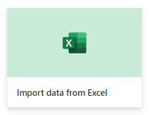
preview the data
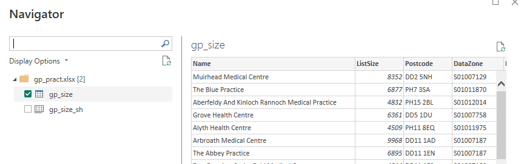
work with the data in Power BI
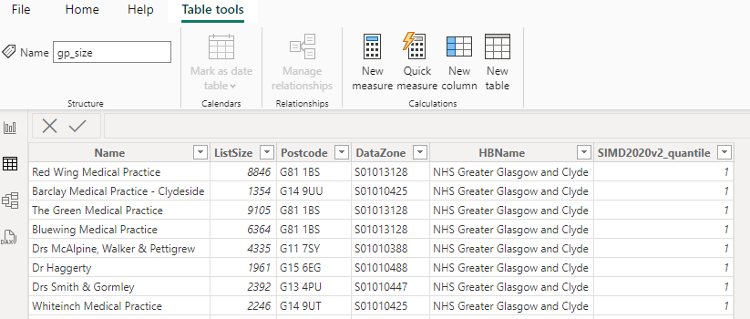
tidy/wrangle the data in Power Query
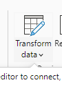
add a map visual
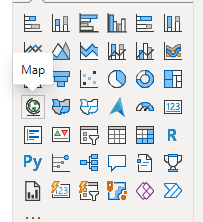
populate with our data
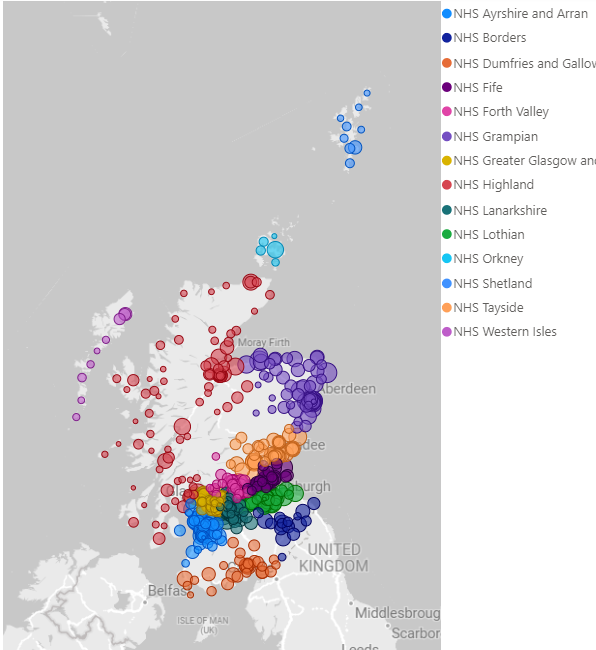
add a column graph
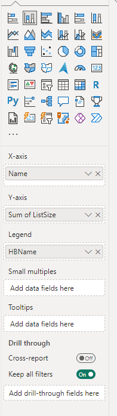
populate with drag and drop
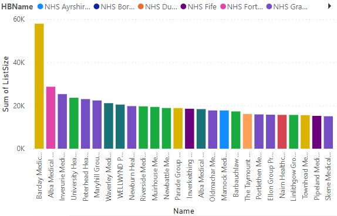
add slicer
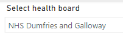
slicers change our visualisations
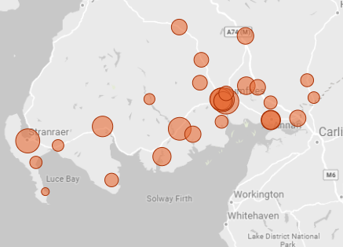
add a numeric summary
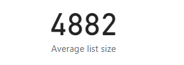
publish
See preview - although note that access might require permission
Five ways that Power BI might help you
1: making data fun makes data useful
2: you need a data hub
- Provides a standard way of accessing data from lots of sources
- call this a data hub
- great for sharing with a well-defined group
- an excellent way of guarding your spreadsheets
- useful for moving away from holding data on shared drives etc
3: the easiest way to build scalable dashboards
- lower barriers to entry than competitors
- scales really well (dashboard example)
- scaling isn’t free though…
4: don’t repeat yourself
- in Excel, when the data changes you need to re-do your work
- not so in Power BI: reproducible data loading pipeline
- possible route towards real-time data
5: let users serve up their own data
- bored of slicing up spreadsheets and emailing them to people? Let them do it themselves
- Power BI is a terminal product: it’s meant to be used at the end of a data journey
- don’t expect to do much fancy exporting from BI
Weaknesses
- Power BI needs tidy input data - so use Excel tables, and expect to get good at Power Query etc
- don’t believe the no-code lies - you’ll need some DAX and Power Query M
- publishing is complicated and potentially expensive and requires investigating before building a product
- complex IG picture across Scotland, so please get official guidance early
- a terminal analysis product, so don’t plan to take data from Power BI
- struggles with more complex statistical tools - a specific warning here about QI